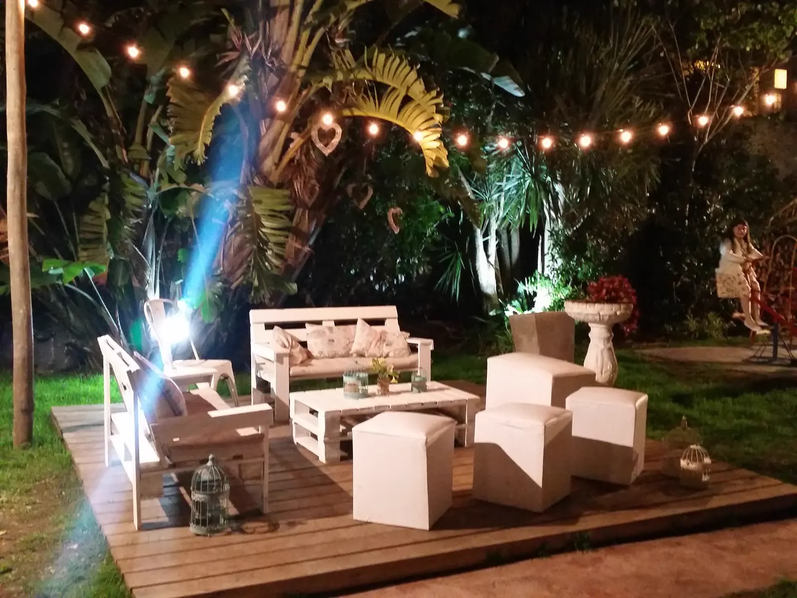
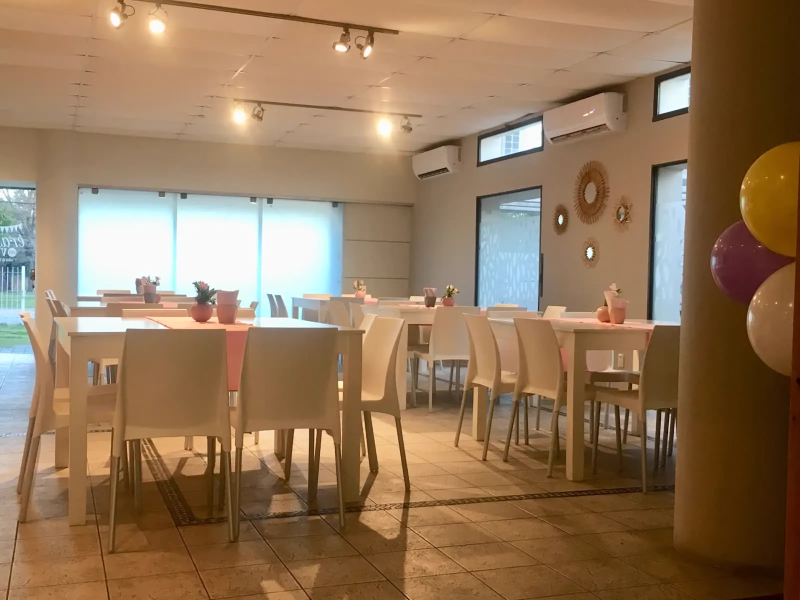
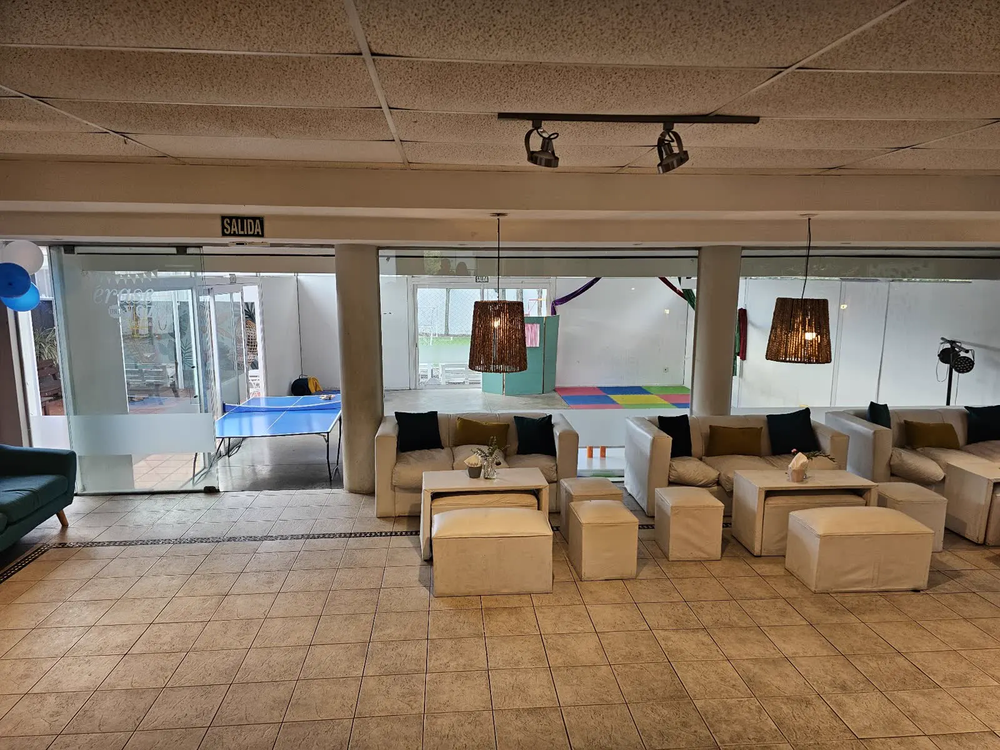
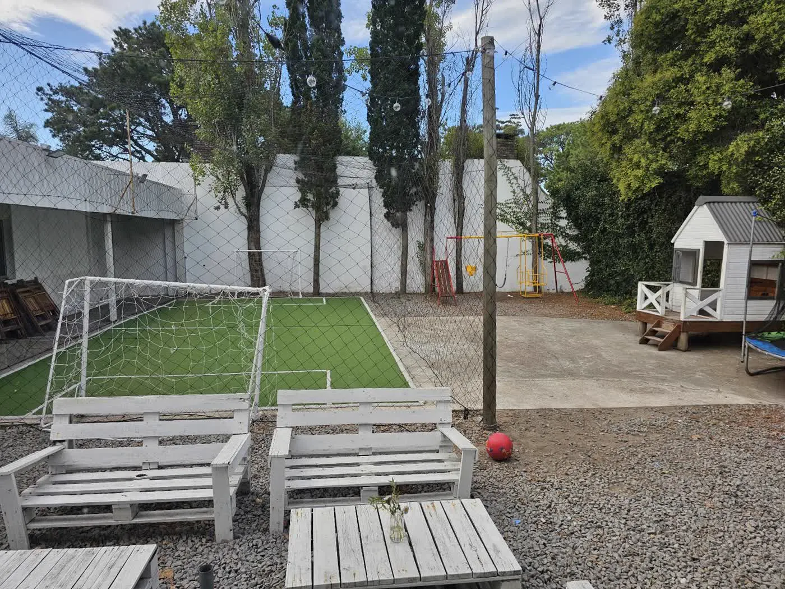
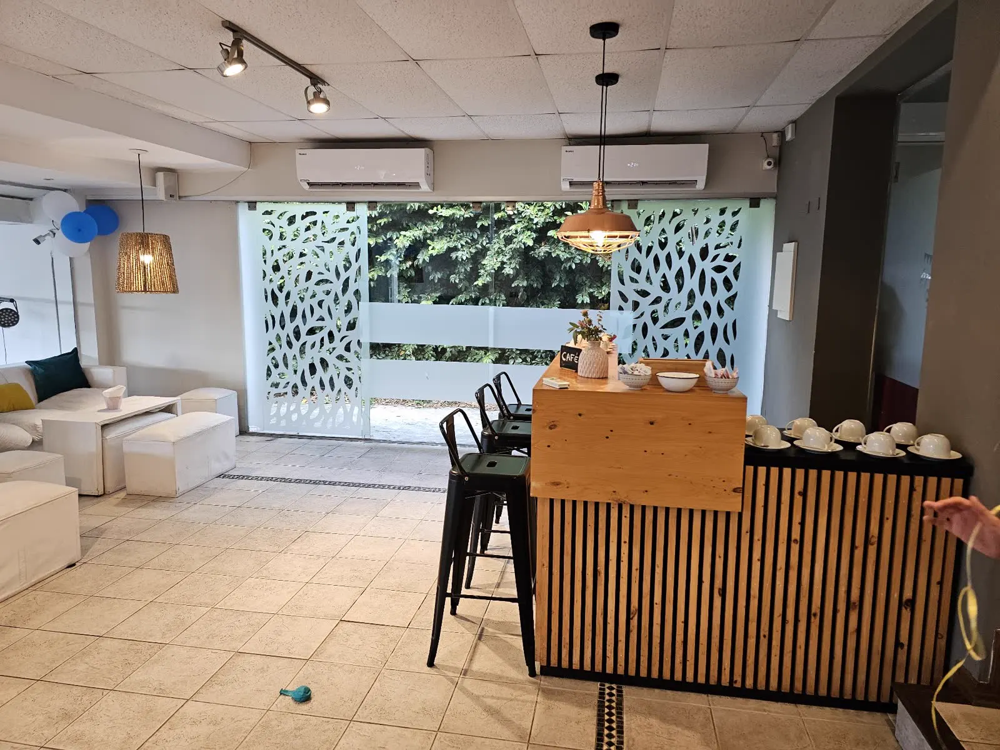

Érase una vezuna fiesta quenadie quería queterminara.
Dos casas en Carrasco y Malvín para cumpleaños, matinés, 15 y eventos. Entrá y recorrelas.
Acá los chicos trepan, se tiran al pelotero, saltan y bailan hasta que los vienen a buscar. Los grandes charlan tranquilos, comen rico y se llevan la mejor foto del año.
Elegí una puerta y pasá.
Cada casa tiene lo suyo. Tocá una y recorrela espacio por espacio, como si ya estuvieras adentro.
Pasá, está abierto.
El pelotero
Pelotas de colores hasta la cintura y un tobogán para tirarse.
La palestra
Una pared para trepar, con agarres de colores.
Saltar y colgarse
Cama elástica, telas, metegol y un inflable con tobogán.
La sala gamer
Arcade, consolas y cómic en las paredes, con luz de neón.
Hockey y ping pong
Bajo los arcos de ladrillo, para chicos y grandes.
El salón
Techo de madera, ventanales y un ambiente amplio para que todos estén juntos.

El jardín de noche
Guirnaldas de luces entre las plantas y un deck con sillones.
Y en Carrasco
Luz natural, una cancha de verdad y una barra para los grandes.

El salón
Ventanales al jardín y mesas que se adaptan a cada deco.
Vestido para la fiesta
Así quedó el salón para un cumple Safari.

Living y juegos
Sillones para los grandes y colchonetas y ping pong para los chicos.

La cancha
Pasto sintético, arcos y una casita para los que prefieren otra cosa.

La barra
Madera, banquetas altas y la mesa de la torta cerca.
¿Querés verla con más detalle?
Entrá al recorrido completo y tocá cada rincón.
Así se vive una fiesta acá.
Fiestas de verdad, filmadas por las familias y los decoradores. Tocá cualquiera para verla con sonido.
¿Qué festejás?
Cada fiesta pide otra cosa. Bajá y encontrá la tuya.
Reservar es más fácil de lo que pensás.
Consultás la fecha
Nos contás qué festejás, cuándo y para cuántos. Te respondemos por WhatsApp con lo que hay libre.
Venís a conocerla
Coordinamos una visita a la casa que elijas para que la veas en persona.
Reservás y la armamos
Elegís la propuesta, reservás tu fecha y empezamos a preparar tu fiesta.
Contanos tu fiesta
Elegí lo que tengas claro y te respondemos por WhatsApp con disponibilidad y propuestas. Si preferís, vení a conocer la casa antes.
- WhatsApp 099 175 488
- Correo erasefiestas@hotmail.com
- Instagram @eraseunavez_salon